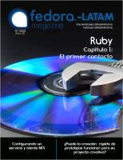
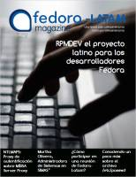
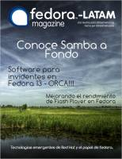

Esta página contiene enlaces a los números publicados de la revista Fedora LATAM magazine en 2011 - 2010.
Página web: Revista Fedora LATAM magazine (copia en archive.org)
Número 7 - 2011 abril
Descarga (PDF 18.1 MB, español)

Número 6 - 2011 marzo
Descarga (PDF 16.9 MB, español)

Número 5 - 2011 febrero
Descarga (PDF 14.4 MB, español)
Número 4 - 2010 noviembre
Descarga (PDF 13.8 MB, español)
Número 3 - 2010 octubre
Descarga (PDF 20.8 MB, español)

Número 2 - 2010 septiembre
Descarga (PDF 17.3 MB, español)
Número 1 - 2010 agosto
Descarga (PDF 9.4 MB, español)